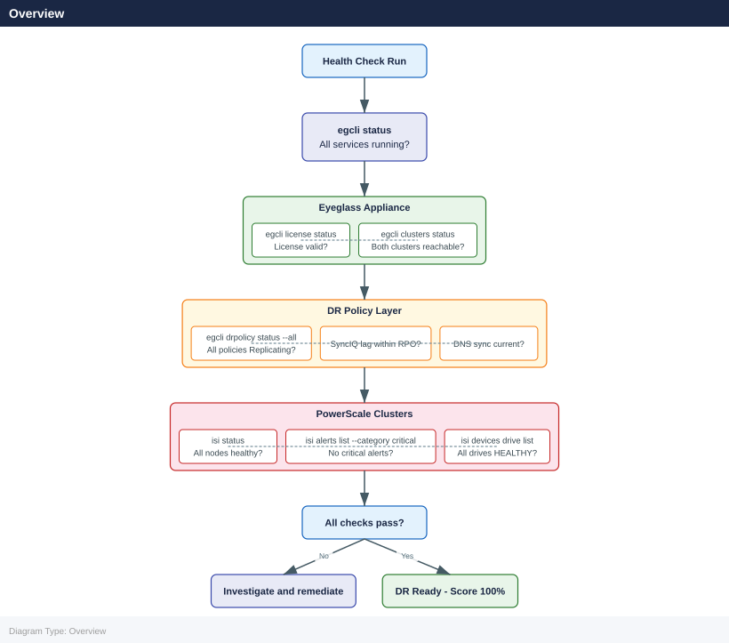
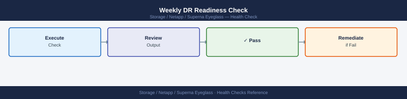
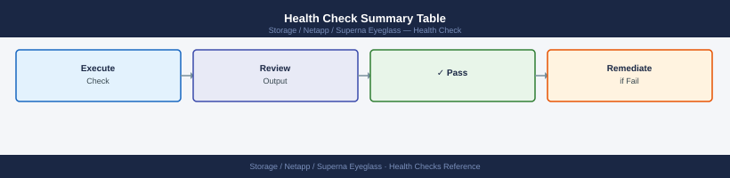
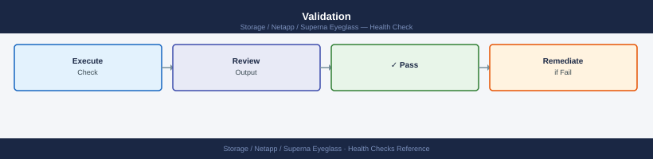

Superna Eyeglass — Health Checks¶
Before you begin¶
- Access: Storage admin credentials (cluster admin or equivalent)
- Timing: safe to run during business hours unless a step is marked ⚠ (causes interruption)
- Dependencies: no active upgrades or migrations on the same infrastructure
- Logging: capture command output — paste into the change record on completion
Overview¶
Eyeglass health checks cover the Eyeglass appliance itself, PowerScale cluster connectivity, SyncIQ policy status, and DR policy readiness. Run daily as a minimum; automated checks should run every 15–30 minutes.

Run This Routine¶
- Eyeglass service health: browser to
https://<eyeglass-appliance>:443— dashboard should load without errors - Configuration replication status: Eyeglass Dashboard → Configuration Replication — check all jobs show Last Sync within expected window
- Share/export sync: Eyeglass → File Replication → check all critical SMB shares and NFS exports are synced
- DR failover readiness: Eyeglass → DR Testing → check Runbook shows Ready status for all target clusters
- Quota sync: Eyeglass → Quota Manager → check all quotas replicated to DR cluster
- Local user/group sync: Eyeglass → User and Group Replication → verify sync status
- Eyeglass appliance disk space: SSH to appliance →
df -h /— alert if >80% - Eyeglass version and updates: Settings → About → note version; check for available updates
- Alert history: Eyeglass → Alerts — review and acknowledge any open Critical or Warning alerts
- Test failover readiness: Eyeglass → DR Test → verify last test date; flag if untested >90 days
| SyncIQ Status | Meaning | Action |
|---|---|---|
| running | Active sync in progress | Monitor; confirm completion |
| finished | Last run completed successfully | OK |
| failed | Last run failed | Check reports for errors; restart if needed |
| paused | Policy is paused | Confirm intentional; resume if not |
| disabled | Policy is disabled | Confirm intentional; enable if DR policy |
PowerScale Cluster Health¶
# On each PowerScale cluster (production and DR)
isi status
# Check for critical alerts
isi alerts list --category critical
# Check for failed or degraded drives
isi devices node list
isi devices drive list | grep -v HEALTHY
# Check SmartConnect VIP pool health (for client access)
isi network pools list
# Confirm SyncIQ service is running
isi sync service view
OneFS Version: 9.4.0.0 (Build 9.4.0.0.12345)
Cluster Name: prod-pscale-01
Cluster Health: HEALTHY
Nodes: 8
Drives: 64
Category: critical
ID: ALERT-2847
Message: Node 3 disk enclosure temperature warning
Severity: CRITICAL
Time: 2024-01-15T09:23:44Z
ID: ALERT-2851
Message: SyncIQ replication lag exceeds threshold
Severity: CRITICAL
Time: 2024-01-15T09:18:12Z
Node: 2
Status: DEGRADED
Reason: 1 failed drive in enclosure 2
Node: 5
Status: HEALTHY
Name: prod-smartconnect-pool
Subnet: 192.168.10.0/24
Rebalance Policy: auto
Health: DEGRADED
Access Zone: System
Name: dr-smartconnect-pool
Subnet: 192.168.20.0/24
Health: HEALTHY
Service: SyncIQ
Status: RUNNING
Version: 9.4.0.0
Last Updated: 2024-01-15T09:45:22Z
Replication Jobs: 12 active, 0 failed
Common errors
isi: command not found — Ensure you are logged into the PowerScale cluster via SSH or run commands from a system with the OneFS CLI installed.
Error: Authentication failed — Verify your credentials and that your user account has administrative privileges on the cluster.
Error: SyncIQ service is not running — Restart the SyncIQ service using isi sync service start and verify replication jobs are queued.
Weekly DR Readiness Check¶

# Run Eyeglass preflight on DR cluster — confirms all DR prerequisites are met
egcli drtest preflight --cluster <dr-cluster>
# Expected output: all checks PASS
# Common checks include:
# - SyncIQ policies configured and running
# - Access zones configured at DR site
# - NFS/SMB export/share definitions replicated
# - DNS integration (if configured) operational
# - Eyeglass connectivity to both clusters confirmed
# Review Eyeglass DR readiness dashboard
# Eyeglass UI: https://<eyeglass-ip>:8443 → DR Dashboard
Running preflight checks on DR cluster dr-cluster-02...
[✓] PASS: SyncIQ policies configured (12 policies found, 11 running)
[✓] PASS: Access zones replicated (4/4 zones synchronized)
[✓] PASS: NFS exports replicated (28/28 exports present on DR)
[✓] PASS: SMB shares replicated (15/15 shares present on DR)
[✓] PASS: DNS integration operational (resolving via 10.45.12.8)
[✓] PASS: Eyeglass connectivity to source cluster (latency: 12ms)
[✓] PASS: Eyeglass connectivity to DR cluster (latency: 18ms)
[✓] PASS: Replication lag within threshold (<5 minutes)
Preflight check completed: 8/8 PASS
DR cluster dr-cluster-02 is ready for failover operations.
Common errors
Error: Unable to connect to cluster dr-cluster — connection refused — Verify the DR cluster hostname/IP is reachable and Eyeglass has network connectivity on port 443.
Error: SyncIQ policy 'policy-backup-03' not running — status: paused — Resume all paused SyncIQ policies on the DR cluster before proceeding with failover.
Error: 3 NFS exports missing on DR site — replication incomplete — Wait for SyncIQ replication to complete or manually sync missing exports before running preflight again.
Health Check Summary Table¶

| Check | Command | Expected |
|---|---|---|
| Eyeglass services | egcli status |
All services running |
| DR policy state | egcli drpolicy status --all |
All in Replicating state |
| SyncIQ jobs | isi sync jobs list |
No failed jobs |
| Cluster health | isi status |
All nodes healthy |
| Critical alerts | isi alerts list --category critical |
No critical alerts |
| Drive health | isi devices drive list |
All HEALTHY |
| License | egcli license status |
Valid, not expiring |
Validation¶

DR validation for Eyeglass covers three scenarios: pre-failover readiness, DR test (rehearsal), and post-failover/failback confirmation. Run a full validation at least quarterly and before any planned failover.
| Validation Type | Frequency | Tool |
|---|---|---|
| DR preflight | Weekly / pre-change | egcli drtest preflight |
| DR test (rehearsal) | Quarterly | egcli drtest run |
| Post-failover validation | After every failover | Manual + egcli |
| Post-failback validation | After every failback | Manual + egcli |
Eyeglass DR Preflight¶
The preflight check verifies all prerequisites for a failover without making any changes.
# Run preflight against the DR cluster
egcli drtest preflight --cluster <dr-cluster>
# Run preflight for a specific policy
egcli drtest preflight --policy <policy_name>
# Expected output — all items should show PASS:
# [PASS] SyncIQ policy last run: 3 minutes ago
# [PASS] Access zones configured on DR cluster
# [PASS] NFS exports replicated to DR cluster
# [PASS] SMB shares replicated to DR cluster
# [PASS] DNS zones configured
# [PASS] Eyeglass connectivity to both clusters confirmed
# [PASS] SyncIQ service running on both clusters
# Review any WARN or FAIL items and remediate before proceeding
Running preflight checks against DR cluster: dr-cluster-01
Connecting to source cluster: prod-cluster-01... OK
Connecting to DR cluster: dr-cluster-01... OK
[PASS] SyncIQ policy last run: 3 minutes ago
[PASS] Access zones configured on DR cluster
[PASS] NFS exports replicated to DR cluster
[PASS] SMB shares replicated to DR cluster
[PASS] DNS zones configured
[PASS] Eyeglass connectivity to both clusters confirmed
[PASS] SyncIQ service running on both clusters
[PASS] Replication lag: 45 seconds
[PASS] Certificate validation successful
Preflight check completed: 10/10 PASS, 0 WARN, 0 FAIL
Common errors
[FAIL] Unable to connect to DR cluster dr-cluster-01 — Verify the DR cluster hostname/IP is correct and reachable from the Eyeglass appliance using ping or ssh.
[WARN] SyncIQ policy last run: 2 hours ago — Manually trigger the SyncIQ policy on the source cluster or check for policy scheduling issues before proceeding with DR operations.
[FAIL] Eyeglass connectivity to both clusters confirmed: FAILED — Confirm Eyeglass has network connectivity and valid credentials configured for both clusters in the web UI settings.
DR Test (Rehearsal)¶
A DR test performs all failover steps but rolls back at the end, returning to normal replication.
# Step 1 — Run Eyeglass DR test (non-destructive rehearsal)
egcli drtest run --policy <policy_name>
# Step 2 — Monitor test progress
egcli drtest status --policy <policy_name>
# Step 3 — Validate access zones activated on DR cluster
egcli accesszone status --cluster <dr-cluster>
# Step 4 — Validate NFS exports on DR cluster
ssh admin@<dr-cluster> "isi nfs exports list"
# Step 5 — Validate SMB shares on DR cluster
ssh admin@<dr-cluster> "isi smb shares list"
# Step 6 — Confirm DNS resolution (if Eyeglass DNS integration active)
nslookup <smartconnect_zone_name>
# Step 7 — After validation, confirm DR test rollback is complete
egcli drtest status --policy <policy_name>
# Expected: State = Rolled Back / Replicating
# Step 1 — Run Eyeglass DR test (non-destructive rehearsal)
Test run initiated for policy 'prod-cluster-dr'
Test ID: dr-test-20240315-0847
Status: In Progress
# Step 2 — Monitor test progress
Policy: prod-cluster-dr
Test ID: dr-test-20240315-0847
State: Running
Progress: 78%
Elapsed Time: 12m 34s
Estimated Remaining: 3m 22s
# Step 3 — Validate access zones activated on DR cluster
Access Zone: System
Status: Active
Nodes: 3
Access Zone: zone-finance
Status: Active
Nodes: 3
Access Zone: zone-engineering
Status: Active
Nodes: 3
# Step 4 — Validate NFS exports on DR cluster
ID Path Clients Protocols
1 /ifs/data/finance 192.168.10.0/24 nfs3,nfs4
2 /ifs/data/engineering 192.168.20.0/24 nfs3,nfs4
3 /ifs/backup/archive 0.0.0.0/0 nfs3
# Step 5 — Validate SMB shares on DR cluster
Share Name Path Permissions
finance-shared /ifs/data/finance Everyone: Read
eng-projects /ifs/data/engineering Domain Admins: Full
backup-archive /ifs/backup/archive SYSTEM: Full
# Step 6 — Confirm DNS resolution (if Eyeglass DNS integration active)
Server: 10.50.1.10
Address: 10.50.1.10#53
Name: smartconnect.prod.local
Address: 192.168.50.100
# Step 7 — After validation, confirm DR test rollback is complete
Policy: prod-cluster-dr
Test ID: dr-test-20240315-0847
State: Rolled Back
Status: Replicating
Last Sync: 2024-03-15 09:15:22 UTC
Next Sync: 2024-03-15 10:15:22 UTC
Common errors
Error: Policy 'prod-cluster-dr' not found or not accessible — Verify the policy name matches exactly and your Eyeglass user has read permissions on the policy.
ssh: connect to host <dr-cluster> port 22: Connection timed out — Confirm the DR cluster hostname/IP is reachable and SSH is enabled; check firewall rules between your admin host and DR cluster.
drtest status: Test rollback failed — manual intervention required — Check Eyeglass logs for replication errors and ensure the primary cluster is still reachable before attempting rollback again.
Post-Failover Validation¶
Run after a declared DR failover to confirm the DR cluster is fully operational.
# Confirm DR policy is in Failed Over state
egcli drpolicy status --all
# Confirm DR cluster is healthy
ssh admin@<dr-cluster> "isi status"
ssh admin@<dr-cluster> "isi alerts list --category critical"
# Confirm access zones are active on DR cluster
egcli accesszone status --cluster <dr-cluster>
# Confirm NFS/SMB access for clients
ssh admin@<dr-cluster> "isi nfs exports list"
ssh admin@<dr-cluster> "isi smb shares list"
# Test NFS mount from a client
mount -t nfs <dr-smartconnect-ip>:/<export_path> /mnt/drtest
ls -la /mnt/drtest
# Confirm SyncIQ is stopped on original production policy (not running)
ssh admin@<production-cluster> "isi sync policies list"
Policy Name: prod-to-dr
Policy ID: 8f4c2e91-a3d5-11ec-8429-0a1234567890
State: Failed Over
Last Sync: 2024-01-15T14:32:18Z
Direction: prod-to-dr
isi status
OneFS Version: 9.5.0.0 (Build 9.5.0.0.1234567)
Cluster Health: Healthy
Nodes: 6/6 online
Drives: 144/144 healthy
isi alerts list --category critical
(no alerts)
Cluster: dr-cluster-01
Access Zone: System
Status: Active
Access Zone: data-zone-01
Status: Active
Access Zone: data-zone-02
Status: Active
isi nfs exports list
ID Path Clients Protocols
1 /ifs/data/prod-export 0.0.0.0/0 nfs3,nfs4
2 /ifs/archive/backup 10.0.0.0/8 nfs3,nfs4
isi smb shares list
ID Share Name Path Clients
1 prod_data /ifs/data/prod-export Everyone
2 archive_backup /ifs/archive/backup CORP\Domain Users
mount -t nfs 192.168.50.100:/ifs/data/prod-export /mnt/drtest
total 48
drwxr-xr-x 8 root root 4096 Jan 15 14:22 .
drwxr-xr-x 12 root root 4096 Jan 15 10:15 ..
-rw-r--r-- 1 user user 24576 Jan 15 13:45 report_2024.xlsx
drwxr-xr-x 3 user user 4096 Jan 15 12:30 projects
isi sync policies list
Policy Name: prod-to-dr
State: Stopped
Last Run: 2024-01-15T14:32:18Z
Common errors
mount.nfs: access denied by server while mounting <dr-smartconnect-ip>:/<export_path> — Verify the NFS export exists on the DR cluster and client IP is in the allowed clients list using isi nfs exports view <export_id>.
ssh: connect to host <dr-cluster> port 22: Connection refused — Confirm the DR cluster management IP is correct and SSH is enabled; check network connectivity with ping <dr-cluster>.
egcli: command not found — Ensure you are running commands from the Superna Eyeglass appliance or have the egcli tools installed and in your PATH.
Post-Failback Validation¶
# Confirm DR policy is back to Replicating state
egcli drpolicy status --all
# Confirm production cluster is healthy
ssh admin@<production-cluster> "isi status"
# Confirm access zones are back on production cluster
egcli accesszone status --cluster <production-cluster>
# Confirm SyncIQ is running in the normal direction (production → DR)
ssh admin@<production-cluster> "isi sync policies list"
# Confirm last SyncIQ run completed successfully
ssh admin@<production-cluster> "isi sync reports list --limit 5"
# Confirm client access is restored to production
nslookup <production-smartconnect-zone>
Policy Name State Last Run Next Run
prod-to-dr-policy Replicating 2024-01-15 14:32 2024-01-15 15:32
dr-to-prod-policy Idle 2024-01-15 12:15 Never
Cluster is healthy.
Status: OK
Version: OneFS 9.4.0.1234
Access Zone Name Cluster Status
System prod-cluster-1 Active
zone-finance prod-cluster-1 Active
zone-marketing prod-cluster-1 Active
Policy Name State Source Target
prod-to-dr-policy Running prod-cluster-1 dr-cluster-1
dr-to-prod-policy Paused dr-cluster-1 prod-cluster-1
Policy Name State Duration Files Changed
prod-to-dr-policy Completed 2h 14m 45,230
prod-to-dr-policy Completed 2h 08m 38,156
prod-to-dr-policy Completed 2h 22m 52,891
Name Server: 192.168.1.10
Address: 10.50.20.45
prod-smartconnect.example.com canonical name = prod-smartconnect-vip.example.com.
Name: prod-smartconnect-vip.example.com
Address: 10.50.20.45
Common errors
Error: Connection refused to drpolicy service — Verify Superna Eyeglass service is running with systemctl status eyeglass and check network connectivity to the Eyeglass appliance.
ssh: Could not resolve hostname <production-cluster>: Name or service not known — Replace <production-cluster> with the actual FQDN or IP address of your production cluster (e.g., prod-cluster-1.example.com).
nslookup: can't resolve '<production-smartconnect-zone>': No address associated with hostname — Confirm the SmartConnect zone name is correct and DNS is properly configured; verify with isi network smartconnect list on the production cluster.
Validation Record Template¶
| Check | Date | Result | Notes |
|---|---|---|---|
| DR preflight passed | |||
| DR test completed successfully | |||
| NFS exports accessible at DR site | |||
| SMB shares accessible at DR site | |||
| DNS failover confirmed | |||
| Failback completed | |||
| SyncIQ replicating (prod → DR) | |||
| Client access restored to production |
Verify¶
- Eyeglass UI dashboard shows all services green and no outstanding alarms
- SyncIQ replication policies show
Runningand last-run within the expected window - SMB share failover test: shares accessible from DR site post-failover and post-failback
- DNS failover verification: client resolution points to DR SVM IP during failover